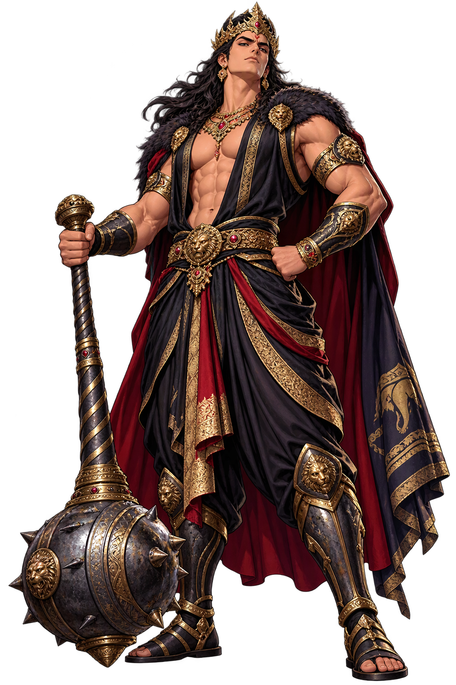
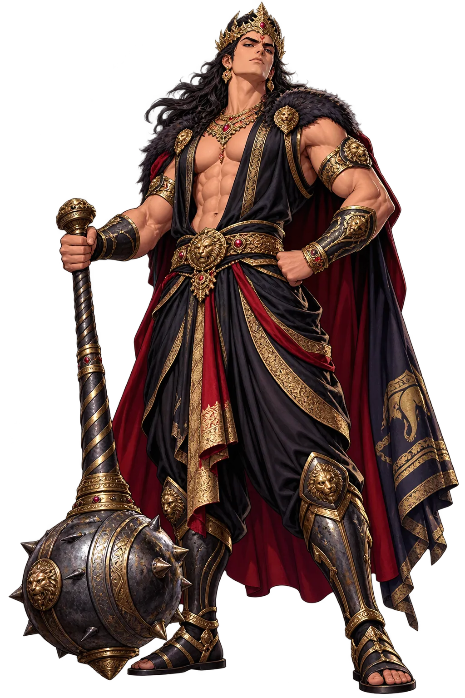

The Cult
No temples to Duryodhana in orthodox India — the victors’ orthodoxy forbade it. But the epic’s own ambivalence is his cult: he is the character every Mahābhārata retelling must rescue from simplicity.
Extended Lore
Etymology · Orthography · Cult · Iconography · Reception · Sources

Duryodhana — every fact links to its home
From original script to canonical restoration — the full etymology page →
The name Duryodhana reaches the modern world through scholarly transliteration of the sanskrit tradition. Because the conventional spelling uses only Latin letters, its canonical and ASCII forms coincide — the tradition it carries is in the name itself, not in diacritics.
Character-by-character philological analysis
| Character | Unicode | Name | Block | Phonetic Role |
|---|---|---|---|---|
| D | U+0044 | Latin Capital Letter D | Basic Latin | Same |
| u | U+0075 | Latin Small Letter U | Basic Latin | Short /u/ |
| r | U+0072 | Latin Small Letter R | Basic Latin | Same |
| y | U+0079 | Latin Small Letter Y | Basic Latin | Same |
| o | U+006F | Latin Small Letter O | Basic Latin | Same |
| d | U+0064 | Latin Small Letter D | Basic Latin | Same |
| h | U+0068 | Latin Small Letter H | Basic Latin | Same: aspirate /dʱ/ |
| a | U+0061 | Latin Small Letter A | Basic Latin | Short /a/ |
| n | U+006E | Latin Small Letter N | Basic Latin | Same |
| a | U+0061 | Latin Small Letter A | Basic Latin | Short /a/ |
This restoration reflects fidelity to the attested tradition, not recovered diacritics: every character of Duryodhana already survives in ASCII. What the restoration preserves is the canonical spelling itself — the form scholarship standardised.
How the sacred was kept — rites, sanctuaries, remains
No temples to Duryodhana in orthodox India — the victors’ orthodoxy forbade it. But the epic’s own ambivalence is his cult: he is the character every Mahābhārata retelling must rescue from simplicity.
Duryodhana’s monuments are performance: the Kutiyattam and Kathakali stages of Kerala keep the dice-game and the embassies in living repertory; and the Indonesian wayang kulit shadow-theatre’s Duryudana puppets are museum-pieces of the epic’s longest journey.
How Duryodhana was imaged across the ages
The mace-fighter in royal dress, often with Karṇa beside him; in Indonesian wayang, the strong rounded form of the amUK-king. His icon is the clenched fist — the epic’s most repeated gesture of refusal.
The name after its own age — transmission, translation, survival
Comparative literature sets him beside Achilles and Turnus as the enemy the epic loves; postcolonial readings (Bhyrappa’s Parva, the Indonesian tellings) made his cause the honest one. He remains the great test of the Mahābhārata’s fairness: the reader who hates him has read half the book.
Duryodhana is the epic’s dark mirror of the dharmarāja Yudhiṣṭhira: where the eldest Pāṇḍava keeps the letter and loses the spirit, Duryodhana keeps the pride and loses everything. Later tradition made him a byword for envy, but the critical readings — from the Bhārata’s own ambivalence to modern novelists — keep restoring the man the epic refused to flatten.
His name is the subcontinent’s standing word for ruinous obstinacy; his friendship with Karṇa, for loyalty across caste. The dice-game is staged as dance-drama across South and Southeast Asia; and in Indonesian wayang, where the Mahābhārata became a national epic, Duryodhana (Duryudana) is among the most beloved characters — the loser the culture refuses to disown.
What the written record preserves — and what it does not
The Devanagari form is दुर्योधन, Duryodhana — dur-, 'hard, ill-', plus yodhana, 'battle': 'hard to conquer in war', a boast the Mahābhārata slowly turns into an epitaph. Epic scholarship has long noted that the eldest Kaurava is born Suyodhana, 'fair fighter', and that 'Duryodhana' functions as the tradition's hostile re-spelling of the same man — the victors' orthography preserved in the victors' text. The Devanāgarī joins र्य and धन; the romanization needs no diacritics. The written record thus keeps two names for one prince, and the argument about which he deserved has never closed.
What Duryodhana means — beyond the dictionary
Duryodhana: a name that means “hard to conquer”, worn by the man history conquered most completely. Restored plainly, it keeps its double edge — the boast and the epitaph in four syllables, the epic’s whole tragedy compressed into one who would not yield a needle’s point.
Deep-dives into the cult, attestation, reception, and sources of Duryodhana
Duryodhana’s monuments are performance: the Kutiyattam and Kathakali stages of Kerala keep the dice-game and the embassies in living repertory; and the Indonesian wayang kulit shadow-theatre’s Duryudana puppets are museum-pieces of the epic’s longest journey. The full cult record →
The record rests on Mahābhārata, Ādi Parvan (the birth), Mahābhārata, Sabhā Parvan (the dice game), Mahābhārata, Udyoga Parvan (the refusal), among 4 cited works. The full source apparatus →
Comparative literature sets him beside Achilles and Turnus as the enemy the epic loves; postcolonial readings (Bhyrappa’s Parva, the Indonesian tellings) made his cause the honest one. Reception & transformation →
The mace-fighter in royal dress, often with Karṇa beside him; in Indonesian wayang, the strong rounded form of the amUK-king. The iconography →
The Devanagari form is दुर्योधन, Duryodhana — dur-, 'hard, ill-', plus yodhana, 'battle': 'hard to conquer in war', a boast the Mahābhārata slowly turns into an epitaph. The Original Script note →
The philological foundations of the record
Every claim on this page is grounded in established scholarship. The orthographic restorations follow disciplinary convention. The etymological chain follows the best available reference works. This is not invention — it is resurrection through scholarship.
You have traced the name from its earliest attestation to its canonical restoration. Now return to the myth. The story is where the name lives.
Back to Lore